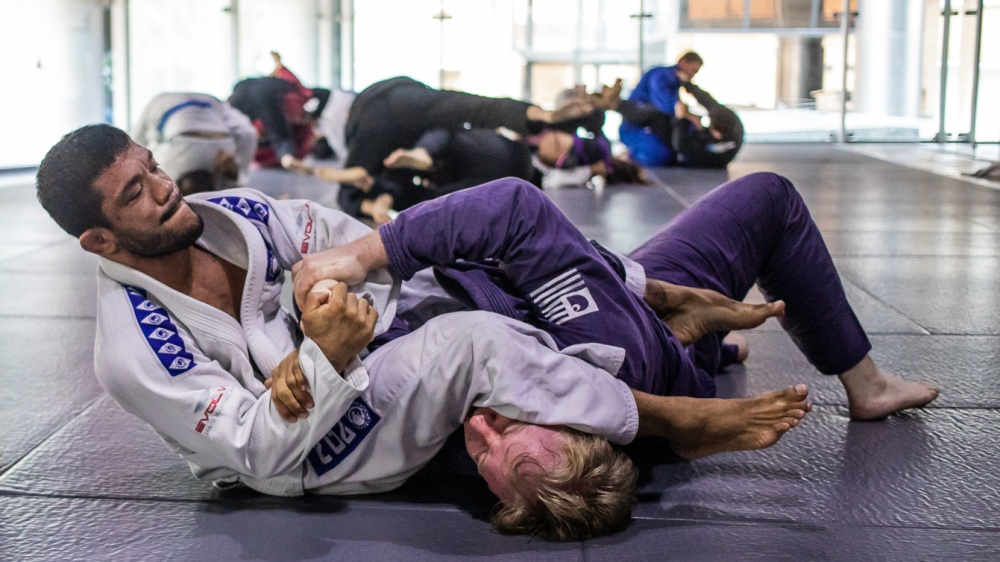
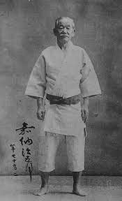

Про цей вид спорту:
Бойове мистецтво та система самозахисту, що сфокусована на боротьбі, особливо, в партері. Це бойове мистецтво походить від японського бойового мистецтва Кодокан дзюдо. Бразильське джиу-джитсу було створено на початку XX століття вихідцями з клану Ґрейсі: Еліу Ґрейсі та Карлушом Ґрейсі
Ідея цього виду спорту
Бразильське джиу-джитсу навчає, що менша, слабша людина може успішно захищатися та перемагати більшого та міцнішого супротивника, застосовуючи фізичні принципи та правильну бойову техніку — сабмішини. Техніка БДД використовується на спортивних змаганнях з боротьби (в ґі та без ґі), змішаних бойових мистецтвах та для самозахисту. Головну роль у тренуваннях відіграє спаринг (в БДД також зветься ролінг) та тренування у парі з партнером. БДД має власну систему поясів/рангів.
Плюси цього виду спорту
Бразильське джиу-джитсу постійно розвивається в технічному плані. Це як шахи. З’являються все нові й нові комбінації і ходи. Саме через це воно людям і подобається, своєю інтелектуальністю.
Освоївши певний арсенал технік і комбінацій, ви зможете відносно легко перемогти опонента, не лишаючи йому жодних шансів.
У бразильському джиу-джитсу ‒ вас не б’ють в обличчя. Це величезний плюс, якщо людина обирає для себе прикладний вид бойових мистецтв як хобі, й при цьому щодня спілкується з людьми по основній своїй роботі.
Це мистецтво може практикуватися як система самозахисту (в тому числі й у силових підрозділах спеціального призначення), спортивне єдиноборство або як розділ підготовки бійця до змагань зі змішаних єдиноборств (ММА).
Мабуть тому, ті, хто практикують це бойове мистецтво, стають найдобрішими людьми у світі. Вся агресія переходить з емоційного і м’язового рівня на рівень інтелекту – ти намагаєшся обіграти опонента, а не зламати його.
Змагання:
Змагання в джиу-джитсу, як і саме це бойове мистецтво, вимагає від вас зібраності, сконцентрованості та вчить швидко знаходити правильне рішення для розв’язання тієї чи іншої задачі, й іноді це неординарні рішення, комусь навіть смішні, але саме завдяки таким рішенням досягається мета.
Перші змагання в Україні з бразильського джиу-джитсу відбулись в 2010 році. Вони були швидше клубного формату. Зараз значну роль у розвитку та популяризації цього спорту в Україні, та у долях окремо взятих українських спортсменів, відіграє Федерація бразильського джиу-джитсу.
GI
Гі – це уніформа для бразильського джіу-джитсу. Вона подібна до дзюдоги, але з більш щільними і короткими манжетами на штанях і куртці. Це дозволяє займається БДД отримувати вигоду з їхньої близької підгонки, надаючи противнику менше місця для захоплення. Існують певні стандарти, яким має відповідати гі, яка використовується учасником змагань. Іноді як назва даної уніформи використовується (також, як і стосовно дзюдоги) термін «кімоно», особливо в Бразилії
Поясна система у Бразильському Джиу Джитсу
Як тренери визначає коли треба видавати новий пояс
Соревнования играют важную роль в градации студентов бразильского джиу-джитсу, поскольку они позволяют преподавателю определить уровень своего спортсмена против спортсмена того же уровня из другой школы. Представление на пояс может быть дано после успеха на соревновании, особенно на более низких уровнях поясов. Оно также может быть выдано учащемуся, который в своей школе побеждает всех спортсменов своего уровня и начинает побеждать некоторых спортсменов на уровень выше. Пример: белый пояс заставляет сдаться всех белых поясов его школы, а также заставляет сдаться некоторых синих поясов его школы
Які існують пояси?
Білий
Синій
Фіолетовий (Пурпурний)
Коричневий
Чорний
Чорно-червоний
Червоний (Кораловий)
Білий пояс отримуєтся з самого першого тренування, синій пояс можна отримати після 1-2 років тренувань, залежно від частоти тренувань студента та його навчання. Пурпуровий пояс можна одержати протягом 2-4 років. Це значною мірою залежить від студента та частоти навчання. Фіолетовий пояс є найнижчим рівнем, який може мати викладач. Час, після якого можна отримати коричневий пояс, - 5-8 років, чорний - від 8 років
Відомі представники цього виду спорту:
Андре Луїс Лейте Галван
Бразильський боєць змішаного стилю, чемпіон світу та чемпіон ADCC, володар чорного поясу з бразильського джиу джитсу. Андре Галван є одним із засновників команди Atos, однією з топ-команд бразильського джіу-джитсу у світі. Багаторазовий чемпіон світу з греплінгу, володар кубка світу з бразильського джиу джитсу
Антоніу Родріґу Ногейра
Бразильський боєць змішаних єдиноборств. Чемпіон UFC у важкій вазі (2008), 2-кратний чемпіон PRIDE у важкій вазі (2001, 2002), Володар тимчасового поясу чемпіона PRIDE у важкій вазі (2003), Чемпіон RINGS у важкій вазі (2001), Чемпіон 2000). Власник чорного поясу по бразильському джіу-джитсу та дзюдо.
Бі Джей Пенн
Колишній чемпіон UFC у легкій та напівсередній вазі. Власник чорного поясу по бразильському джіу-джитсу. Перший не Бразилець, що став чемпіоном світу.
Фабрісіо Вердум
Бразильський боєць змішаних бойових мистецтв, дворазовий чемпіон світу у суперважкій вазі у бразильському джіу-джитсу.
Нік Діас
Колишній чемпіон Strikeforce у напівсередній вазі, колишній чемпіон World Extreme Cagefighting у напівсередній вазі, володар чорного поясу з бразильського джіу-джитсу.
Історія
Бразилія
У 1914 році Міцуйо Маеда приїхав до Бразилії, де і влаштувався на кілька наступних років. Там він зустрів Гастана Грейс, місцевого аристократа. У 1916 році 14-річний син Гастана - Карлуш Грейсі - спостерігав демонстрацію мистецтва Маеди в Театрі Світу і вирішив вивчити його. Маеда прийняв Карлуша в учні, той став майстром і разом із молодшим братом Еліу Грейсі заклав основу сучасного бразильського Грейсі Джіу-Джитсу.
У 1921 році Гастан Грейсі та його родина переїхали до Ріо-де-Жанейро. Карлуш, якому було 17 років, передав знання, отримані від Маеди, своїм братам – Освальду, Гастану та Жоржі. Еліу був тоді занадто молодий і хворий на те, щоб займатися цим мистецтвом, він не міг брати участь у тренуваннях через медичну заборону. Незважаючи на це, Еліу навчався, спостерігаючи за братами. Свої недуги він все ж таки зміг подолати. Він вважається багатьма засновником бразильського джіу-джитсу (хоча інші, наприклад, Карлсон Грейсі, називають Карлуша засновником цього мистецтва).
